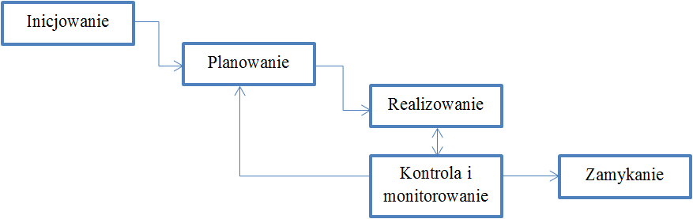

Przyjęło się wyróżniać następujące etapy zarządzania projektem:
Powyższe etapy są niezależne od rodzaju projektu. Poniżej przedstawiono relacje zachodzące pomiędzy etapami.
Rys. 2.1.1 Relacje między etapami projektu
Poza etapami projektu warto wyróżnić obszary wiedzy, które związane są z zarządzaniem projektami. Te obszary również są niezależne od rodzaju projektu. Za PMI przyjmując wyróżnia się następujące obszary wiedzy:
Tab. 2.1.1 Relacja obszarów wiedzy zarządzania projektami do etapów projektu
| Etap Obszar wiedzy | Inicjacjowanie | Planowanie | Realizacja | Kontrola i monitorowanie | Zamykanie |
|
Integracja |
X | X | X | X | X |
| Zakres | X | X | |||
| Czas | X | X | |||
| Koszt | X | X | |||
| Jakość | X | X | X | ||
| Ludzie | X | X | X | ||
| Komunikacja | X | X | X | ||
| Ryzyko | X | X | |||
| Zamówienia | X | X | X | X |
Źródło: Wysocki R.K.: Effective Project Management: Traditional. Agile, Extreme. Indianapolis. 2009. Wiley Publishing Inc. s. 31.
Powyższe obszary wiedzy są istotne na co najmniej jednym etapie projektu, ale przeważnie dotyczą dwóch lub trzech. Macierz powiązań pomiędzy etapami projektu a obszarami wiedzy została przedstawiona w tabeli 2.1.1.
W kolejnych rozdziałach opisujących poszczególne etapy projektu zostały omówione wszystkie powyższe obszary wiedzy. Pomimo że obszary wiedzy przenikają przez kilka etapów projektu, każdy z nich został opisany przy okazji tylko jednego etapu tego, który wydaje się być najbardziej istotny z punktu widzenia danego obszaru.